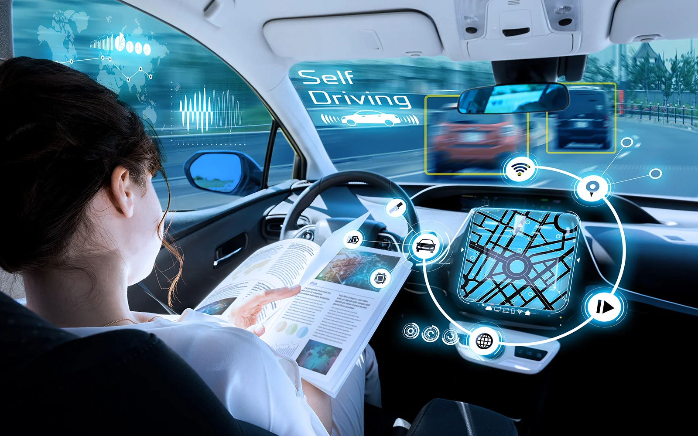

O Futuro dos Carros Autônomos
Os carros autônomos prometem revolucionar o transporte urbano e rodoviário. Descubra como essa tecnologia está evoluindo!
Tecnologia por Trás dos Carros Autônomos
Os carros autônomos usam sensores, câmeras e inteligência artificial para navegar sem a necessidade de um motorista humano.
Impacto na Sociedade
Além de oferecer mais segurança, os carros autônomos podem reduzir congestionamentos e melhorar a eficiência energética.